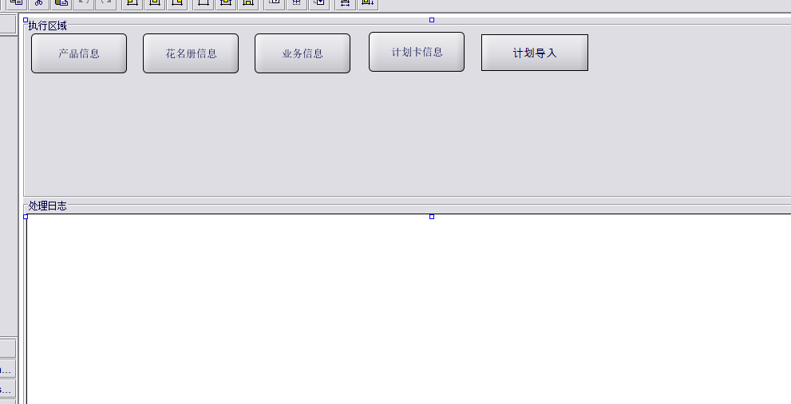

importSubroutine("MES_Common_UI")
importSubroutine("MES_Common_Time")
importSubroutine("MES_Common_Combobox")
importSubroutine("MES_PP_Common")
importSubroutine ("ra_errorHandling")
importSubroutine ("MES_Common_Base")
importSubroutine ("MES_Common_Log")
importSubroutine("MES_PP_Common")
importSubroutine("MES_Common_DataDict")
importSubroutine("MES_OM_Common")
import("com.rockwell.discrete.mes.system.model.um.employee.MESUMEmployee")
import("com.rockwell.discrete.mes.system.model.um.employee.MESUMEmployeeFilter")
DSS_NAME = "PDS"
/**
* 描述: 获取IMS中间表的花名册信息：新增，更新
*
* @author: QF 08/25/2020
* @revision: 1.0
**/
function getUserInfoByIMS(listboxMessage)
{
sql = " select
plan_key,
plan_number,
part_number,
plan_qty,
work_shop,
plan_type,
plan_starttime,
plan_finishtime,
status,
route_name,
plan_desc,
remarks,
create_time,
modification_time,
modified_by,
import_status
from
IM_ImportPlan where 1=1 "
vectorData = getArrayDataFromActive(sql)
vectorPlannumber = vector()
vectorFlag = vector()
user = getCurrentUser()
if(!vectorData.isEmpty())
{
listboxMessage.setText("开始执行---》")
for(i=0;i<vectorData.size();i++)
{
data = vectorData.get(i)
plan_number = data[1]
if(plan_number != null)
{
//判断当前用户在花名册表已存在
filterObj = createATRowFilter("IM_ImportPlan")
filterObj.forColumnNameEqualTo("plan_number",plan_number)
planobject = createATHandler("IM_ImportPlan").getATRowsByFilter(filterObj,true)
vectorExec = planobject
if(!vectorExec.isEmpty())
{
plannumber = vectorExec.get(0)
//listboxMessage.setText("工号:"+mesUmEmployee.getUsername()+"姓名:"+mesUmEmployee.getDescription()+"已存在，开始更新")
//listboxMessage.addItem("工号:"+mesUmEmployee.getUsername()+"姓名:"+mesUmEmployee.getDescription()+"已存在，开始更新")
addLastInfoToListBox(listboxMessage,"计划编号:"+data[1]+"型号:"+data[2]+"已存在")
flag =true
}
else
{
plannumber =data[0]
//listboxMessage.setText("工号:"+mesUmEmployee.getUsername()+"姓名:"+mesUmEmployee.getDescription()+"已存在，开始更新")
//listboxMessage.addItem("工号:"+mesUmEmployee.getUsername()+"姓名:"+mesUmEmployee.getDescription()+"已存在，开始更新")
addLastInfoToListBox(listboxMessage,"计划编号:"+data[1]+"型号:"+data[2]+"开始新增")
flag = saveToDB(plannumber,data,listboxMessage)
}
vectorPlannumber.add(plannumber)
//获取保存成功的条数
if(flag == true)
{
vectorFlag.add(flag)
}
}
}
}
if(vectorFlag.size() == vectorPlannumber.size())
{
handleInfoMsg("MES_MAINFROM_MSG_TRX", "SAVE_SUCCESSFULLY", null, null, HANDLER_OPTION_DEFAULT, null)
logInfo(FORM_MODULE," save succefully", getDBTime(), "subroutine:MES_OM_Interface_GetUserInfoByIMS" , "Function:getUserInfoByIMS()")
//listboxMessage.addItem("《--执行完毕")
addLastInfoToListBox(listboxMessage,"《--执行完毕")
}
}
//保存到PART表
function saveToDB(plannumber,data,listboxMessage)
{
obj = data
handler = createATHandler("IM_ImportPlan")
atrowPlan = handler.createATRow()
//产品型号
atrowPlan.setValue("import_key",Long(obj[0]))
atrowPlan.setValue("plan_number",obj[1])
//计划编号
atrowPlan.setValue("part_number",obj[2])
//计划数量
atrowPlan.setValue("plan_qty",obj[3])
//计划发起时间
atrowPlan.setValue("work_shop",obj[4])
//计划完成时间
atrowPlan.setValue("plan_type",Long(obj[5]))
atrowPlan.setValue("plan_starttime",obj[6])
atrowPlan.setValue("plan_finishtime",obj[7])
atrowPlan.setValue("status",1)
atrowPlan.setValue("route_name",obj[9])
atrowPlan.setValue("plan_desc",obj[10])
atrowPlan.setValue("remarks",obj[11])
atrowPlan.setValue("create_time",obj[12])
atrowPlan.setValue("modification_time",obj[13])
response = atrowPlan.save(null,null,null)
checkAndDisplayResponse(response)
if(response.isOk())
{
println("计划导入成功")
flag = true
return flag
}
}
前台调用界面

调用方法：
importSubroutine("MES_Import_Ims")
//runFunctionThread(getPartInfoByIMS,listboxMessage)
runFunctionThread(getUserInfoByIMS,[listboxMessage])